Premier Pas
Typiquement, l'assistant discute avec l'assistée en utilisant Skype, le téléphone, son IM préféré, ou n'importe quel autre outil. Ensuite, en démarrant Dayon! il peut visualiser en direct l'écran de l'ordinateur de l'assistée.
Notez que les images sur cette page correspondent à la version anglaise mais que l'application elle-même est complètement traduite. Je pense que cela ne devrait pas vous empêcher de comprendre l'essentiel.
Attention: cette documentation fait référence à la dernière version du programme.

Dayon! assistée se comporte comme un client qui appelle le monde extérieur; à ce titre il n'y a pas de configuration réseau à faire.
Il faut télécharger et installer Dayon!. Ensuite démarrez Dayon! (vous devriez avoir un raccourci sur le bureau) et cliquez sur l'icône de lecture.
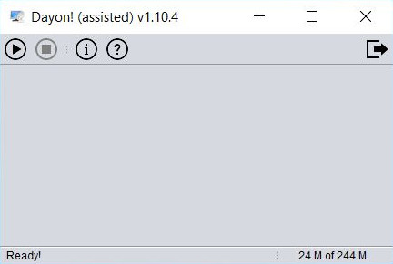
Saisissez le code d'accès communiqué par l'assistant et validez par OK:
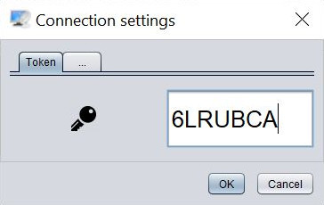
(si vous vous êtes déjà connecté à cet assistant récemment, vous pouvez laisser le champ vide)
Variante alternative (connexion sans code d'accès):
Entrez l'addresse IP et le numéro de port communiqué par l'assistant cliquez sur le bouton "OK":
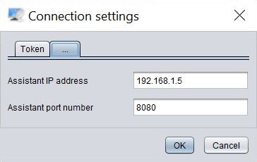
(les deux champs de saisie peuvent être effacés en les double-cliquant)
Vous serez alors promptement connecté à l'assistant qui sera déjà en train de regarder votre écran.
Bonne session!
Dayon! Assistant se comporte comme une application serveur (vers laquelle l'assistée va se
connecter). Vous devez donc configurer le réseau pour rendre votre application visible depuis l'extérieur.
Par défaut, le serveur écoute le Port 8080, mais vous pouvez le modifier si nécessaire.
Ensuite, il faudra autoriser ce port dans votre parefeu et sans doute configurer un service NAT sur votre routeur DSL.
Consultez portforward.com pour un guide étape par étape
pour les plus courants modèles de routeurs.
Optional: Ajuster le port pour les connexions entrantes:
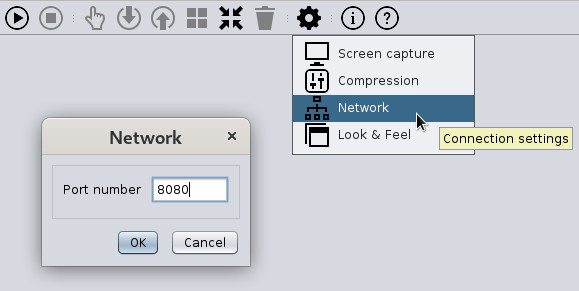
Générez un code d'accès en cliquant sur la clé:
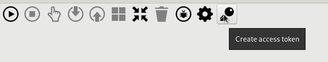
Copiez le code d'accès généré dans le presse-papiers d'un simple clic de souris:
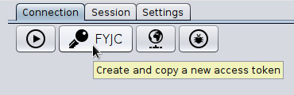
C'est tout - communiquez ce code d'accès à l'assisté par courrier, messagerie instantanée ou téléphone.
Pour les impatients: Ici vous apprendrez comment faire en sorte que l'assistant écoute la connexion entrantes.
Variante alternative (connexion sans code d'accès):
Ensuite, vous devez décider quelle addresse IP vous voulez communiquer à l'assistée pour qu'il
se connecte sur votre ordinateur; vous devez en principe donner votre addresse IP publique. Mais pour
un test sur votre réseau local (ou
sur votre PC en local), vous pouvez utiliser une addresse privée. Vous pouvez obtenir votre addresse IP
publique avec le menu suivant:
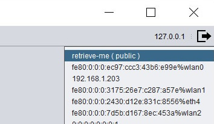
Comme vous pouvez le voir sur l'image suivante, le menu contient différentes actions vous permettant de copier dans le clipboard l'IP Address & Port Number. Il vous sera ainsi facile de coller dans une session Skype (ou autre) ou dans un message email.

Noter que cette addresse IP n'est pas requise pour l'assistant. En effet, l'application écoute sur toutes les interfaces réseaux disponibles; mais la personne assistée va avoir besoin de ces informations.
C'est tout pour la configuration réseau;
Pour les impatients: Ici vous apprendrez comment faire en sorte que
l'assistant écoute la connexion entrantes.
Mais voyons tout d'abord continuer aux informations détaillées sur les options de configuration avancées le côté assistée.
 Mise en Route Coté Assistant
(La Suite)
Mise en Route Coté Assistant
(La Suite)
Cette forme vous permet de configurer la façon dont l'écran est capturé; vous pouvez configurer l'interval de temps (en milli-seconde) entre deux captures (aka. tic-tac) ainsi que le nombre de niveau de gris. Moins de niveaux veut dire moins d'information à transmettre sur le réseau (au détriment de la qualité des images).

Vous pouvez ensuite configuer la méthode de compression; deux méthodes sont disponibles: ZIP et XZ. XZ va donner les meilleurs résultats mais demandent plus de CPU et memoire; elle est bien plus compliquées que ZIP et est de plus implémentées en JAVA (ZIP étant implémenté en code natif dans le JDK).
En plus de la compression, un cache est utilisé pour ne pas envoyer plusieurs fois des images identiques comme par exemple, quand on ouvre et ferme un menu (i.e., l'image sous le menu n'a pas besoin d'être renvoyée). Pour cela, l'écran est divisé en carreaux, chacun pouvant être caché. Vous devez définir le nombre maximum de carreaux dans le cache. Noter qu'un carreaux représente 32x32 points de 256 niveaux de gris, ce qui fait 1K.

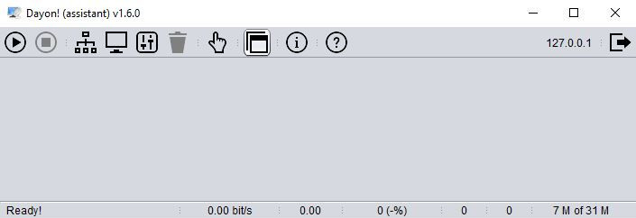
Vous pouvez maintenant demander à l'assistée de se connecter. Vous serez alors promptement requis d'accepter une nouvelle connexion:
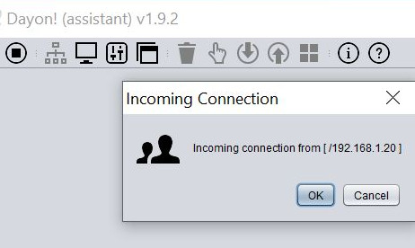
Vous voila connecté visualisant l'ordinateur à distance.
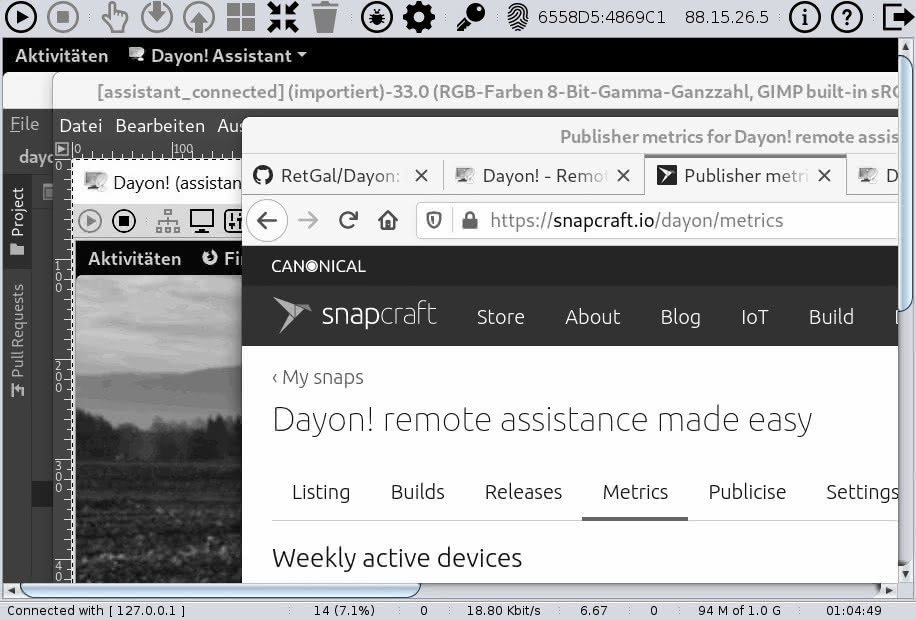
Si le bureau de l'assisté ne rentre pas dans votre fenêtre, il peut être réduit:
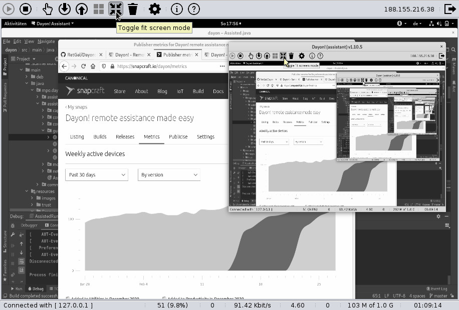
Par default, le mode de contrôle à distance n'est pas activé; vous pouvez l'activer avec l'icône suivante:
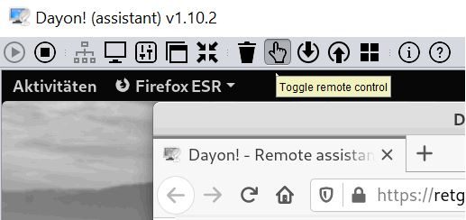
Fonctions avancées
Prérequis: Les fonctions suivantes nécessitent une connexion établie avec l'assistée .
Transfert de presse-papiers
En cliquant sur le bouton haut ou bas, le presse-papiers de l'assistant peut être transféré vers l'assistée (haut) ou le presse-papiers de l'assistée vers l'assistant (bas).
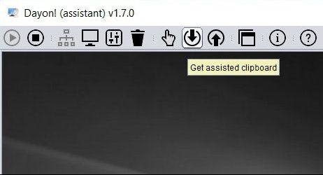
Actuellement pris en charge sont:
- Texte: sélectionnez du texte localement ou dans la fenêtre assistée , copiez (
Ctl + c), cliquez vers le haut ou le bas. Ensuite, le texte transmis peut être inséré dans une application locale ou distante (Ctrl + v). - Fichiers: sélectionnez un ou plusieurs fichiers localement ou dans la fenêtre de la personne assistée
(
Ctl + c), cliquez vers le haut ou le bas. Ensuite, le ou les fichiers peuvent être insérés à la destination.
Attention: Selon le gestionnaire d'affichage / fenêtre et la combinaison JDK, le contenu du
presse-papiers n'est pas copié dans le presse-papiers des destinataires. Le collage (Ctrl + v) n'a donc aucun effet.
Dans la plupart des cas, le contenu a néanmoins été transféré - jetez un œil au répertoire /tmp et recherchez
un dossier uuid (similaire à 68abde33-dd0d-4527-ab5c-fe4bbbec4d42). Vous y trouverez les fichiers du presse-papiers transférés.
Transmettre la pression de la touche Windows
Pour transmettre la pression de la touche Windows, cliquez sur le symbole Windows dans le panneau de configuration de l'assistant:
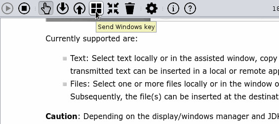
La touche reste enfoncée jusqu'à ce que vous cliquiez à nouveau sur le symbole.
Cela vous permet d'envoyer des raccourcis clavier Windows.
Si vous avez besoin, par exemple, de réduire toutes les fenêtres sur l'assistée, vous cliquez sur le symbole Windows,
appuyez sur la touche M, puis cliquez à nouveau sur le symbole Windows.
Connexion automatique de l'assistée
Via les paramètres de la ligne de commande
Le nom d'hôte ou l'adresse IP et le port de l'assistant peuvent être transmis via des paramètres de ligne de commande :
dayon_assisted ah=example.com ap=4242 (Linux/Mac OS)
Installé en Snap, la commande est dayon.assisted ah=example.com ap=4242, depuis un .tgz
Archive installée à la place : ./dayon_assisted.sh ah=example.com ap=4242 (Linux)
java -jar dayon.jar ah=exemple.com ap=4567 (Windows)
ou pour la version de lancement rapide :
dayon_assisted.exe ah=exemple.org ap=80
Si l'assistant est démarré avec ces paramètres, il se connecte directement à l'hôte transféré sans demander.
Via le fichier de configuration
A partir de la version v11.0.5, les paramètres de connexion peuvent être stockés dans un fichier YAML.
La structure est extrêmement simple :
host: an.example.com port: 8080Ce fichier peut être enregistré sous le nom
assisted.yaml soit dans le Dayon! répertoire personnel, dans le répertoire utilisateur,
ou dans le même répertoire que le .jar, resp. Fichier .exe.
Cet ordre correspond également à la priorité avec laquelle ils sont pris en compte dans le cas de configurations multiples
existent. (la première gagne)Pour éviter que l'assisté ne se connecte automatiquement juste après le démarrage,
assisted.yaml la
ligne suivante peut être ajoutée : autoConnect: false
C'est tout! Vous trouverez plus d'information sur la page support.